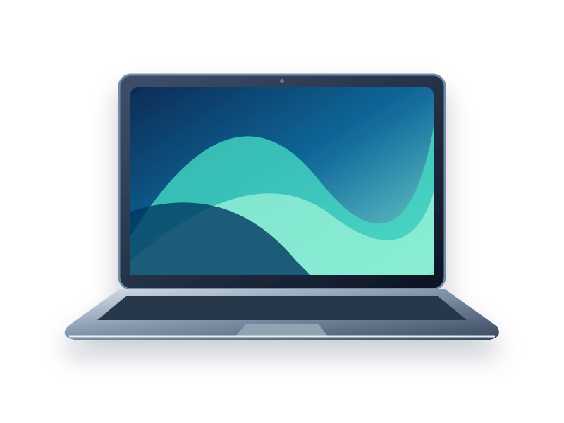

UNA NUEVA FORMA DE EQUIPARTEGrandes ideas.
Grandes ideas.
Mejores herramientas.
Un escritorio que inspira, sonido que acompaña y tecnología que se adapta a ti. Encuentra tu próximo favorito.
COMPUTACIÓNAUDIOACCESORIOS
DISEÑADO PARA TU DÍA A DÍA01 / ELIGE TU PRÓXIMO PASO

CONOCE LA ATLAS 14Tu próxima estación creativa.
↗Elige a tu maneraFiltra, compara y encuentra
Todo, más claroCaracterísticas y precios a la vista
De la idea a tu listaGuarda una cotización local
EXPLORA POR CATEGORÍA
Ver todo Encuentra tu siguiente esencial.
NUESTRA SELECCIÓN
Ir al catálogo →Empieza por algo increíble.
UN ESPACIO QUE SE SIENTE TUYOHaz lugar para
Haz lugar para
tus mejores ideas.
Combina una pantalla amplia, un teclado cómodo y el sonido que te ayuda a concentrarte. El siguiente paso empieza en tu escritorio.
Completar mi espacio ↗MENOS DISTRACCIONES. MÁS POSIBILIDADES.